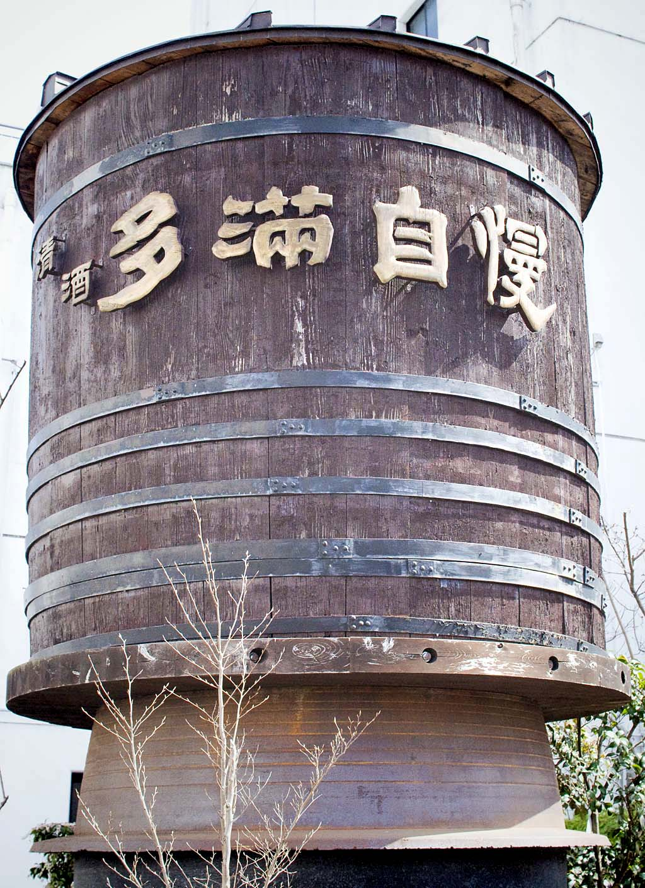
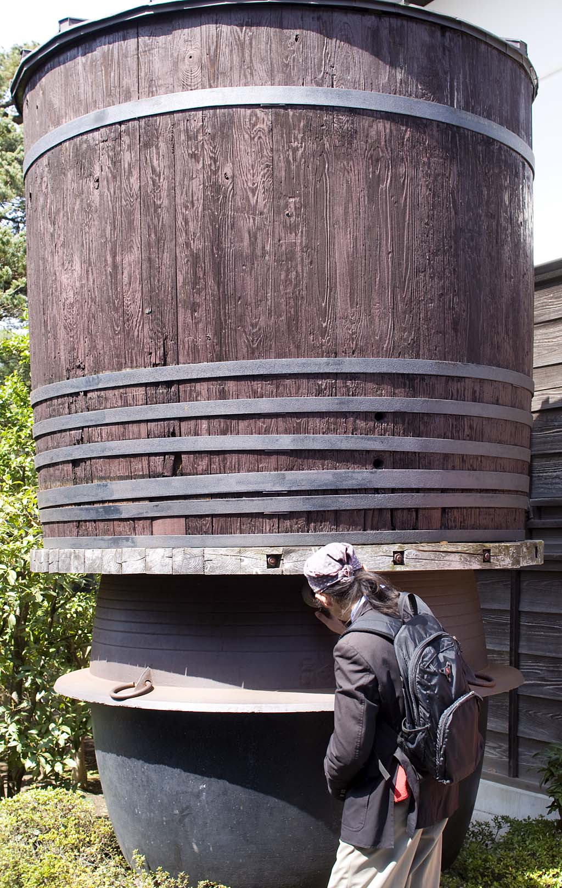
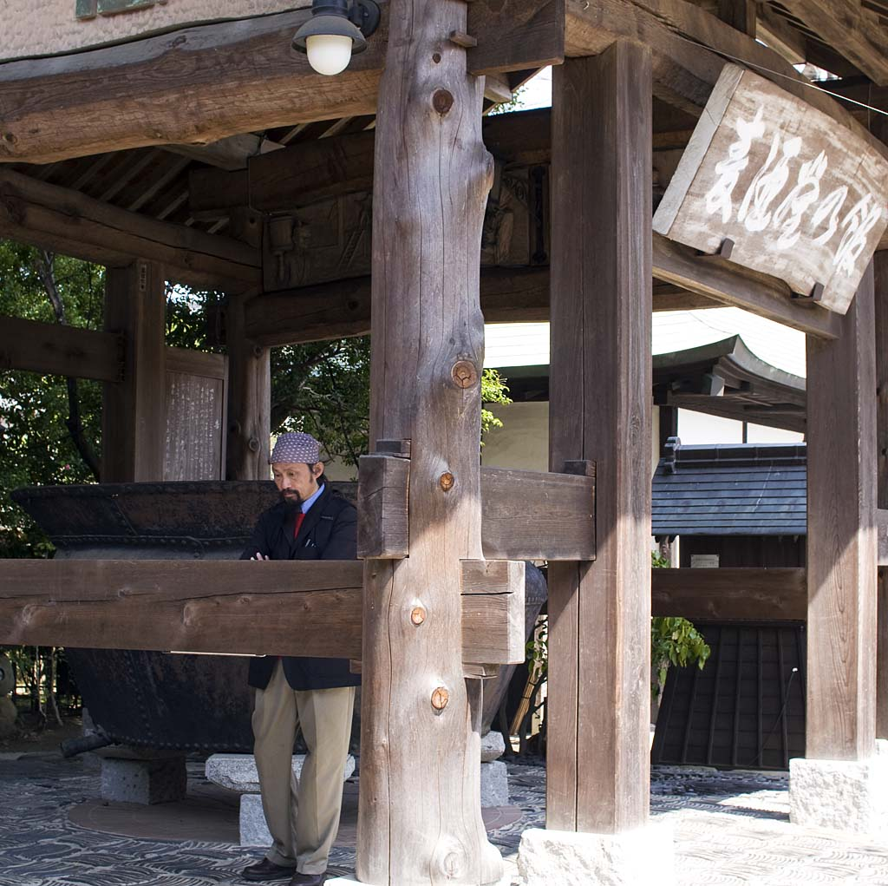
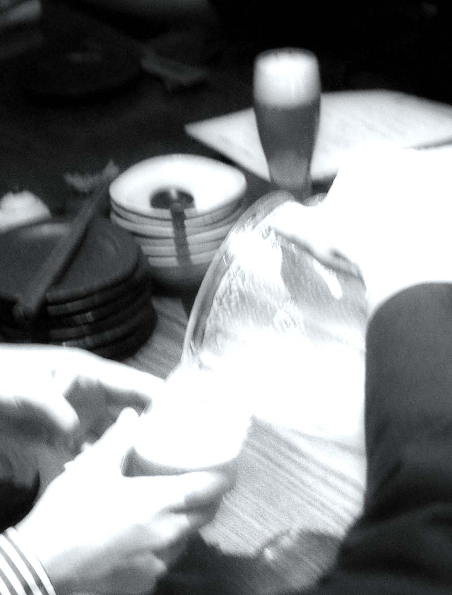
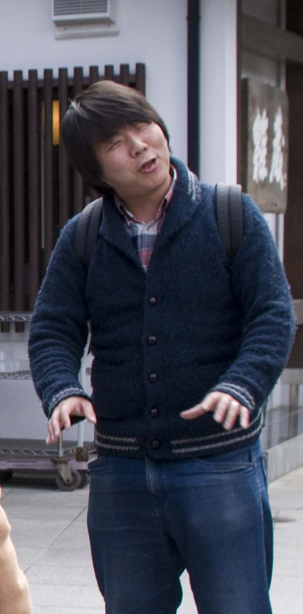

会社主催イベント
第２弾 「日本酒酒蔵見学会＆懇親会」
京葉ブロック東京エリア
2016/3/20 石川酒造株式会社
1,
酒銘「多満自慢 / たまじまん」は |
2,
3,
4,
5,
6,
7,
樹齢400年を超えるケヤキ8,
9,
水はお酒の命10,
明治19（1886）年から明治23年にかけて玉川上水から生活用水としてひかれたものが使われていたとか11,
大阪EC大西さん！12,
11時：酒蔵見学、試飲会スタート13,
杉玉:「搾りを始めました」という意味も持つとか。でも日差し強くここは意味なしとか、、14,
本蔵の中。明治13（1880）年の建築で国の有形文化財16,
17,
２Fも見たかった18,
19,
20,
21,
本蔵の左隣にある酒世羅（さけせらー）：売店22,
23,
友人の松尾さん。フランスや日本でお酒作ってます24,
25,
26,
27,
28,
すばらしい視線です29,
30,
31,
32,
何見てるのかな。松尾さんはTVの旅番組”グレートジャーニー”の元プロデューサー。33,
34,
35,
36,
37,
38,
39,
41,
42,
このイタリアンレストランがとても美味しいとか。次回はぜひ43,
44,
気配り！少し疲れてる？45,
46,
47,
48,
49,
本日の主役：試飲会はこの３本。どれが美味しかったかな？50,
51,
私はあらばしり生酒と日本酒による梅酒の2本を購入52,
土蔵を利用したレストランでお食事53,
昼の空き腹に酒の効き目も早く、、54,
ピントは外れまくり、露出も怪しく55,
56,
57,
58,
59,
60,
61,
62,
63,
64,
69,
70,
71,
また会いましょう～72,
多摩川に散策73,
74,
75,
|
酒銘「多満自慢」美味しいですね。 説明の方のマシンガントークに何度も噴き出しながら、 満員御礼な今回の人気イベント参加できてとても楽しかったなと。 朝少しの降雨の後の午後の快晴。解散後の散策で、酒造の隣の多摩川河川敷が春の陽気で気持ち良かったです。 本日は妻の誕生日なので、美味しかった銘酒２本と、友人に摘んでもらった水仙を頂き帰宅しました。水仙が今も強く匂っています。 知り合いとも久々に逢えて飲んでとても楽しい時間でした。 マネージャーの方々お疲れ様でした。人数も多い中スムーズな進行や手配に感謝です。 歴史を感じる建物をカメラで撮るのが目的の一つだったのですが、現地で撮影係の依頼を仰せつかりました。 上手く写せてるといいのですが。 |